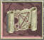
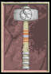

as retold by Tryon the Warrior (now retired)
elcome adventurer! Sit down. Here, by the fire. Listen well, for I am about to reveal a secret I have carried with me these many years ... that of the quest for the Legendary Secret Level. |
To undertake this glorious Quest, you must be a Warrior (sorry, Rogues and Sorcerers!) of a least level 30, who has defeated Diablo in previous battles at Normal, Nightmare and Hell levels. You MUST find and place in your inventory the following uniques, items and potions...The GNARLED ROOT, The FOOL'S CREST (a strange, colorful cap), an Elixir of Gullibility and 10,000 pieces of Gold.. |
nce you have found, purchased, or traded these items, you can begin your quest. The first step is to stand in the Town Square and Place the Fool's Crest on your head. Next, consume the potion of Gullibility by right clicking on it. Now head for Gillian's. |
If you have done everything thus far, you will be able to speak to Gillian. Click on the voice icon and type: "Gillian, I bid you, follow me!". Proceed to the entrance of Hell. Gillian will follow. |
 |
ext you must fight your way all the way down to Diablo's Lair killing everything you come up against. Under no circumstances must you let Gillian be killed by the Monsters or you will have to restart again, right from the beginning! |
hen you have opened Diablo's Lair, DO NOT KILL DIABLO!!! He will notice Gillian with you and say, "What on earth is SHE doing here?" At this point you must click on the voice button and type: "Diablo, what did you say, I'm a bit deaf!" |
Diablo will reply: "No problem! ... Here, let me lend you an ear!" He will now drop the famed EAR OF DIABLO'. (warning it looks like a suit of armour until you pick it up!. As soon as he drops it, grab it and throw up a Portal to the surface. Run through with Gillian before Diablo catches on to what has happened. |
hen you reach the surface you will hear Diablo moan, "NEVER trust a Warrior! They are worse than Used Cart Salesmen!" Proceed to Ogden's for the next stage. |
When Ogden notices Gillian with you and Diablo's Ear in your inventory he will state: "Friends, you look thirsty, maybe these will help." and will hand you three Elixirs of Jack Daniels. Do not drink these yet! |
Proceed to the chapel cemetary with Gillian and stand beside the collapsed tombstone. Drink one of the Elixirs of Jack Daniels and offer one to Gillian. When she has drunk it, drop the EAR OF DIABLO on the tombstone and drop the GNARLED ROOT in front of Gillian. She will say: "Who said Chivalry is Dead?" sarcastically, and then proceed to pry back the Tombstone with the GNARLED ROOT. |
|  | Prying back the tombstone will reveal an old, weathered scroll. It is the MAP OF THE STARS. Take the map and put it in your inventory. |
Now proceed over to the COWS. When you reach the cows, Gillian will milk one of the COWS and hand you the Milk in an elixir bottle. Take this elixir to the Witch Adria's shack. She will notice the bottle, take it, and turn it into an Elixir of Bovine, 2%. |
|  | Head for Griswold's with Gillian. Drop the Elixir of Bovine 2% in front of Griswold. He will take it exclaiming. "Well, it's not Slim Fast, but anything to try and drop a few pounds!" In gratitude for your kind help with his weight problem, Griswold will give you a unique item called THE CRANIUM BASHER. |
So far, so good. Now, head over to Wirt's. When he see's you with Gillian, he will say: "I have something special for you, and offer you a RING OF ENGAGEMENT. He will ask 30,000 gold but, if you followed the instructions at the beginning, you will only have 10,000. Drop the 10,000 Gold and the remaining Elixir of Jack Daniels at his feet. He will pick them up, drop the ring and say: "You drive a hard bargain, Sire!" |
Head back through town and find a quiet spot by the entrance to the catacombs. Here you must propose to Gillian. Drop the RING OF ENGAGEMENT, kneel, click on the voice button and type: "Gillian. I have loved you since the first our eyes met! Marry me and I will give you the STARS!" Gillian will accept immediately saying: "I thought you would never ask, good Knight!" |
Head back to the Town Square where you will be married by Cain in a brief civil ceremony in front of the fountain. Griswold will be Best Man, Adria will be Maid of Honour and the old drunk, Farnham will give the bride away. After a brief reception at Ogden's, it's back to Gillian's. |
ollow Gillian into her cottage. She will stand demurely in the corner of the room with a look of expectant anticipation on her face. ***IMPORTANT*** Under NO Circumstances must you CONSUMATE the marriage. (This is a PG Rated story and that's the nicest way I couldn't think of to say it!). Instead, Take the MAP OF THE STARS, drop it at her feet and say: "Gillian. I promised you the Stars, and here they are! |
Gillian will examine the scroll and exclaim: "It really is YOU, the one who was foretold of these many years!" She will then return the scroll saying: "It is truly a wonderful gift, but you may need it yet, brave Knight!" She will then draw back the tattered carpet on the floor to reveal a set of steps descending into the darkness and say: "This may be the entrance you have been seeking!" |
his is where it gets a bit tricky. Equip the CRANIUM BASHER, click on the PLAYER ATTACK button and start to descend the stairs. As you turn your back, Gillian will withdraw a dagger from her blouse and try to stab you, laughing hysterically, and screaming "Diablo! Lord of all that is EVIL! I Serve Your Will, Oh Great One!" You must dispatch Gillian with a single blow to the head from the CRANIUM BASHER. As you do, she will dematerialize, leaving only a dark shadow on the floor. |
Turn and once again, begin to descend the stairs. At the bottom of the stairs you will see two shimmering gold portals. The one you choose will decide your fate..... |

© Copyright Tryon 1997,1998,1999